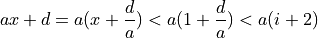

bonding¶
In this page, some formulations are provided used in bonding.
get_neighbor¶
Let’s think about getting neighbor atoms from specific atom.
For simplicity, consider in one dimension where lattice parameter
 , fractional coordinate of specific atom
, fractional coordinate of specific atom  and cutoff distance
and cutoff distance  . In this case, we have to get
atoms from to . We define
. In this case, we have to get
atoms from to . We define  as
as
then

and
Therefore, we have to consider only from to periodic unitcell.